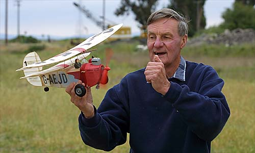
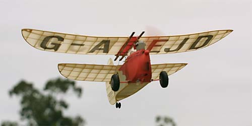
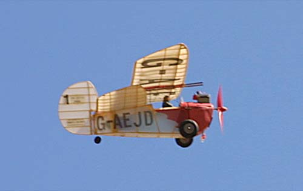
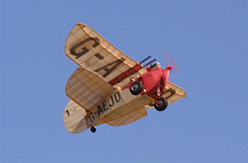

| George seems to have a thing for tandem wing aircraft. Here is his Pou de Ciel, powered with the discontinued Italian Z-Motor. The readily available Air Hog would be a fine substitute. While often inconsistent, this model has occasionally shown itself as a great flyer. It really looks sharp and sounds the part as it circles skyward. |




Copyright 2001, Thayer Syme. All rights reserved